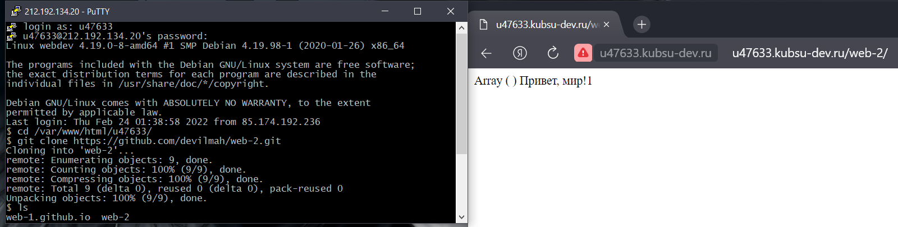
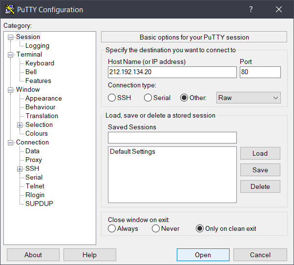
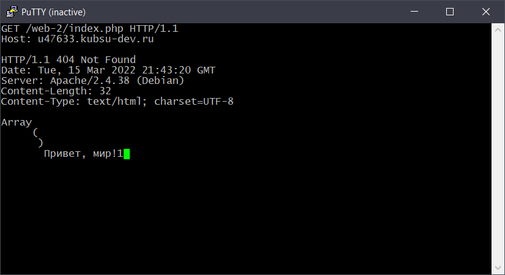
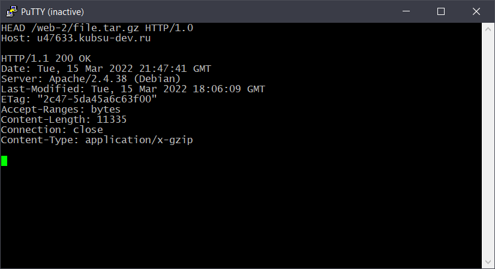
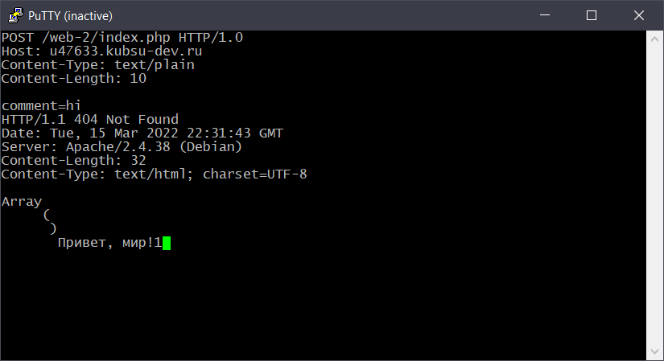
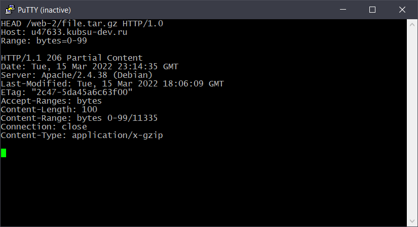
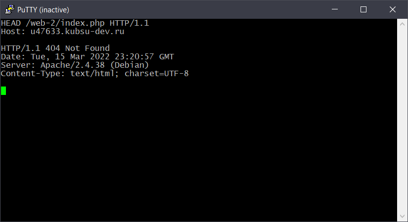

С помощью команды git clone скопирвали папку из гитхаб
репозитория и проверяем роботоспособность файла
Подключение к учебному серверу для http запросов
Установка стандартного порта для прослушивания веб-серверов
80 - http 443 - https raw - необработанныe TCP-соединения
Главная страница в протоколе HTTP/1.0
Главная страница в протоколе HTTP/1.1
HTTP/1.0 предусматривает передачу только одного запроса и одного
ответа через одно TCP соединение, а HTTP/1.1 - многих
Загрузка только заголовков (без загрузки тела) может быть выполнена
с использованием запроса HEAD вместо GET
Размер файла содержится в заголовке Content-Length
Медиатип файла содержится в заголовке Content-Type
С помощью метода POST отправляем по адресу index.php строку
comment=hi
Заголовок запроса Range указаывает какую часть файла file.tar.gz
необходимо получить
Charset указывает на кодировку файла index.php
